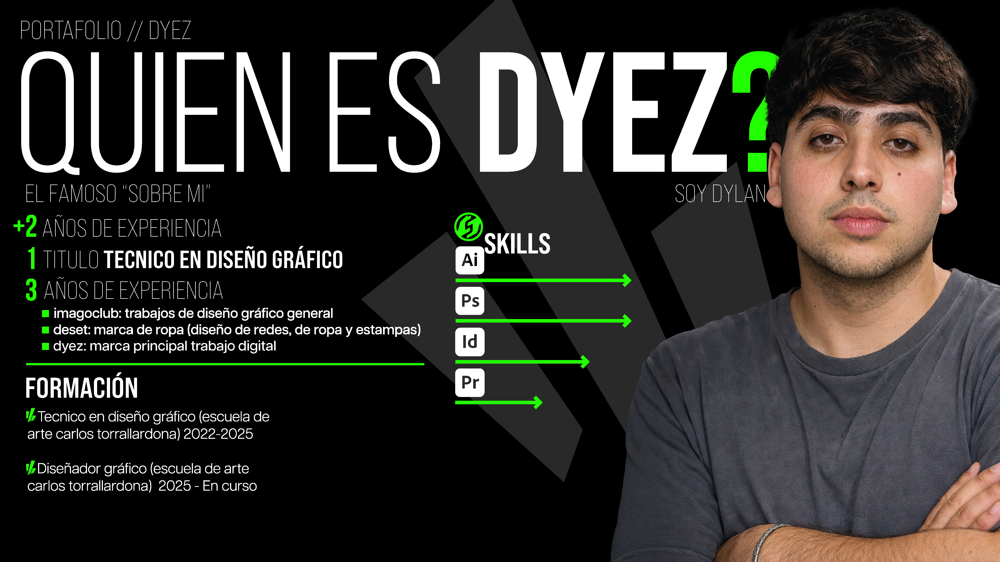

LA ESENCIA
DYEZ es un estudio de diseño gráfico orientado a la creación de identidades con carácter, impacto y personalidad. Nace de la búsqueda de combinar una estética urbana y contemporánea con una construcción visual profesional. El nombre surge como una reinterpretación visual y fonética del número diez, trasladando esa idea a un sistema gráfico intenso y adaptable.
EL SISTEMA VISUAL
Inspirado en la energía del graffiti y la cultura urbana, el sistema utiliza formas angulares, diagonales pronunciadas y un alto contraste para generar tensión visual. El equilibrio entre expresión y estructura permite que la marca sea agresiva pero legible, funcional y coherente en cualquier soporte físico o digital. Un lenguaje visual que transforma ideas en experiencias memorables.
